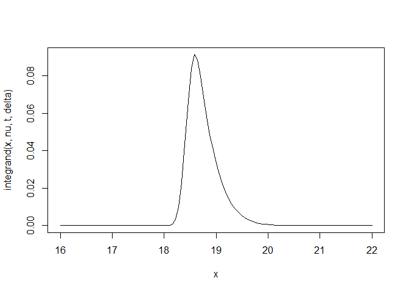
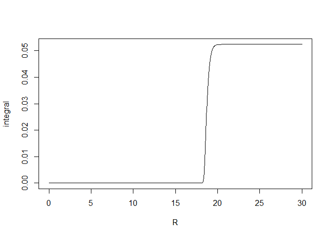
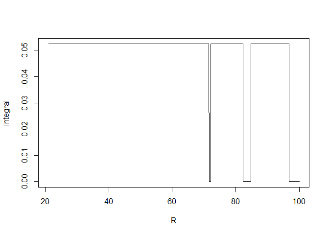
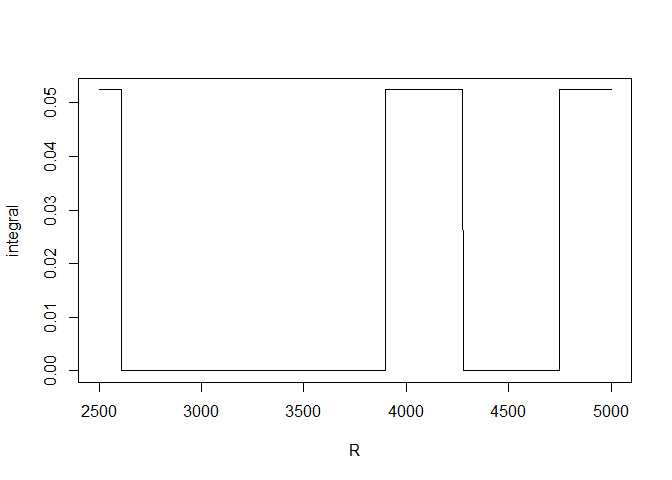
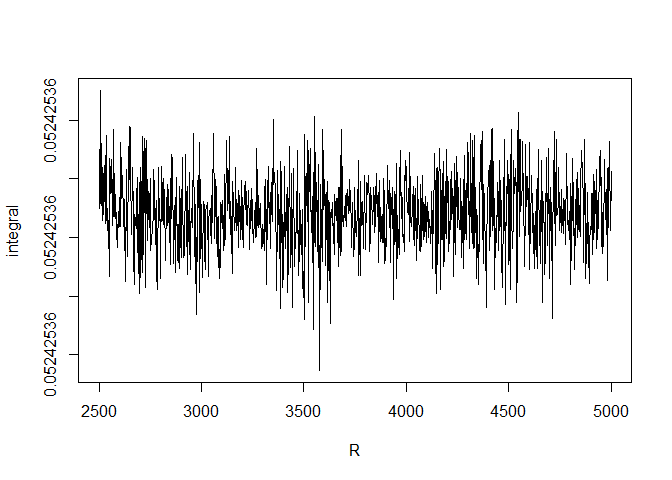
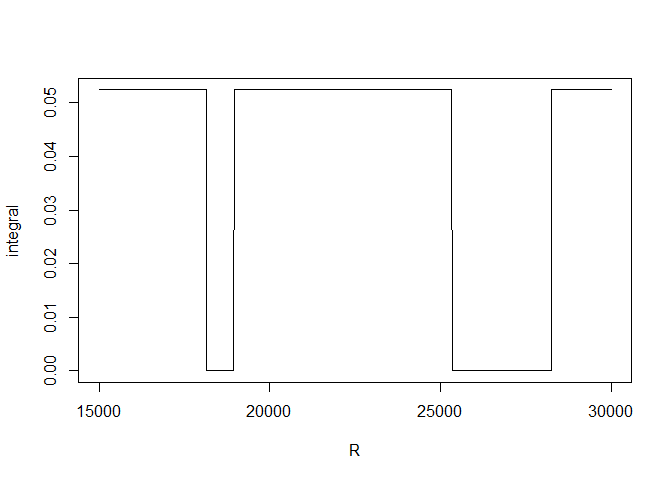
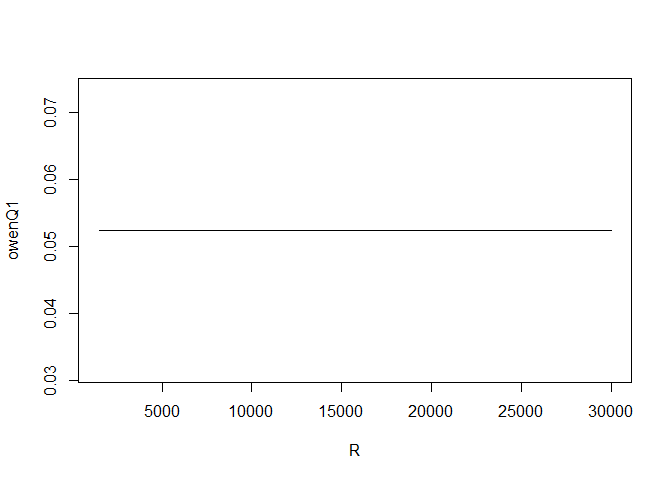

Owen Q-function by numerical integration
- The first Owen \(Q\)-function
- Integration with R - failure
- Integration with
RcppNumerical - Increasing the accuracy
- When the numerical integration beats Owen’s algorithm
- Benchmarks
- Reference
The first Owen \(Q\)-function
My package OwenQ provides an implementation of the function I call the first Owen \(Q\)-function defined by \[ Q_1(\nu, t, \delta, R) = \frac{1}{\Gamma\left(\frac{\nu}{2}\right)2^{\frac12(\nu-2)}} \int_0^R \Phi\left(\frac{tx}{\sqrt{\nu}}-\delta\right) x^{\nu-1} e^{-\frac{x^2}{2}} \mathrm{d}x. \]
The implementation is done in Rcpp, following the algorithm given by Owen (1965) for integer values of the number of degrees of freedom \(\nu\). For odd values of \(\nu\), this algorithm resorts to the evaluation of the Owen \(T\)-function. The OwenQ package uses the implementation of the Owen \(T\)-function provided by the boost C++ library.
Some comparisons with Mathematica show that OwenQ provides an excellent evaluation of \(Q_1\), except for very large values of \(\nu\) in combination with large values of the non-centrality parameter \(\delta\).
Integration with R - failure
Let us try to evaluate \(Q_1\) with the R function integrate.
integrand <- function(x, nu, t, delta){
pnorm(t*x /sqrt(nu) - delta) *
exp((nu-1)*log(x) - x*x/2 - ((nu/2) - 1) * log(2) - lgamma(nu/2))
}
Q1 <- function(nu, t, delta, R, ...){
integrate(integrand, lower=0, upper=R, nu=nu, t=t, delta=delta, ...)
}The evaluation for \(\nu=1\), \(t=2\), \(\delta=3\) and \(R=4\) is good:
library(OwenQ)
OwenQ1(1, 2, 3, 4)
## [1] 0.1794992
Q1(1, 2, 3, 4)
## 0.1794992 with absolute error < 1.4e-05Now let us try with some other values.
nu = 300
t = 150
delta = 160
OwenQ1(nu, t, delta, 20)
## [1] 0.05232857
Q1(nu, t, delta, 20)
## 0.05232857 with absolute error < 5.1e-05For \(R=20\), the evaluation is good. Now, increase \(R\):
OwenQ1(nu, t, delta, 100)
## [1] 0.05242536
Q1(nu, t, delta, 100)
## 7.411467e-07 with absolute error < 1.4e-06The evaluation has failed. And it stills fails if we increase the number of subdivisions:
Let us have a look at the integrand:

The integrand is almost zero outside the interval \([18,21]\).
Therefore the integral from \(0\) to \(R\) stabilizes at \(R=21\):
R <- seq(0, 30, length.out=1000)
integral <- sapply(R, function(R) OwenQ1(nu, t, delta, R))
plot(R, integral, type="l")
The graphic below shows the problem encountered when we use the R integration:
R <- seq(21, 100, length.out=1000)
integral <- sapply(R, function(R) Q1(nu, t, delta, R)$value)
plot(R, integral, type="l")
After \(R = 70\), the evaluation of the integral from \(0\) to \(R\) is not stable.
Integration with RcppNumerical
The RcppNumerical package allows numerical integration based on the C++ NumericalIntegration library.
Let us give it a first try.
// [[Rcpp::depends(RcppEigen)]]
// [[Rcpp::depends(RcppNumerical)]]
#include <RcppNumerical.h>
using namespace Numer;
#include <Rcpp.h>
#include <cmath>
double integrand (double x, double nu, double t, double delta) {
double f = R::pnorm(t*x /sqrt(nu) - delta, 0.0, 1.0, 1, 0) *
exp((nu-1)*log(x) - x*x/2 - ((nu/2) - 1) * log(2) - lgamma(nu/2));
return f;
}
class Integrand: public Func
{
private:
double nu;
double t;
double delta;
public:
Integrand(double nu_, double t_, double delta_) :
nu(nu_), t(t_), delta(delta_) {}
double operator()(const double& x) const
{
return integrand_numer(x, nu, t, delta);
}
};
// [[Rcpp::export]]
Rcpp::NumericVector
OwenQ1numer(double nu, double t, double delta, double R,
int subdiv=100,
double eps_abs=1e-14, double eps_rel=1e-14){
Integrand f(nu, t, delta);
double err_est;
int err_code;
const double res = integrate(f, 0, R, err_est, err_code,
subdiv, eps_abs, eps_rel);
Rcpp::NumericVector out = Rcpp::NumericVector::create(res);
out.attr("err_est") = err_est;
out.attr("err_code") = err_code;
return out;
}For \(R=100\), the evaluation is successful:
OwenQ1numer(nu, t, delta, 100)
## [1] 0.05242536
## attr(,"err_est")
## [1] 5.773263e-16
## attr(,"err_code")
## [1] 0It fails for \(R=3000\):
OwenQ1(nu, t, delta, 3000)
## [1] 0.05242536
OwenQ1numer(nu, t, delta, 3000)
## [1] 1.913546e-35
## attr(,"err_est")
## [1] 3.788077e-35
## attr(,"err_code")
## [1] 0Let us have a look at the instability:
R <- seq(2500, 5000, length.out=1000)
integral <- sapply(R, function(R) OwenQ1numer(nu, t, delta, R))
plot(R, integral, type="l")
Increasing the accuracy
Different integration rules are available in RcppNumerical. They all are Gauss-Kronrod quadratures, but with different accuracies. Let us try the Gauss-Kronrod integration rule with the highest available accuracy:
// [[Rcpp::export]]
Rcpp::NumericVector
OwenQ1numer201(double nu, double t, double delta, double R,
int subdiv=100,
double eps_abs=1e-14, double eps_rel=1e-14){
Integrand f(nu, t, delta);
double err_est;
int err_code;
const double res = integrate(f, 0, R, err_est, err_code, subdiv,
eps_abs, eps_rel,
Integrator<double>::GaussKronrod201);
Rcpp::NumericVector out = Rcpp::NumericVector::create(res);
out.attr("err_est") = err_est;
out.attr("err_code") = err_code;
return out;
}For \(R=3000\), the numerical integration does not fail anymore:
OwenQ1numer201(nu, t, delta, 3000)
## [1] 0.05242536
## attr(,"err_est")
## [1] 5.84141e-16
## attr(,"err_code")
## [1] 0Let us have a look at the integral from \(0\) to \(R\) for \(R\) going, as before, from \(2500\) to \(5000\):
R <- seq(2500, 5000, length.out=1000)
integral <- sapply(R, function(R) OwenQ1numer201(nu, t, delta, R))
plot(R, integral, type="l")
The instability has gone. Now it appears for \(R\) higher than \(15000\):
R <- seq(15000, 30000, length.out=1000)
integral <- sapply(R, function(R) OwenQ1numer201(nu, t, delta, R))
plot(R, integral, type="l")
There is no such problem with the OwenQ1 function of the OwenQ package:
R <- seq(1500, 30000, length.out=1000)
owenQ1 <- sapply(R, function(R) OwenQ1(nu, t, delta, R))
plot(R, owenQ1, type="l")
When the numerical integration beats Owen’s algorithm
On the other hand, for some situations it can happen that OwenQ1 fails while the RcppNumerical integration is successful. As we announced before, OwenQ1 can fail to evaluate the \(Q_1\) function when \(\nu\) is very large. Here is such an example:
OwenQ1(5000, 50, 50, 100) # this result is not correct
## [1] 0
OwenQ1numer201(5000, 50, 50, 100) # this result is correct
## [1] 0.4990485
## attr(,"err_est")
## [1] 5.561545e-15
## attr(,"err_code")
## [1] 0The numerical integration brilliantly gives the correct result.
Benchmarks
Now let us compare the speed of the two implementations.
library(microbenchmark)
microbenchmark(
OwenQ1 = OwenQ1(nu, t, delta, 5000),
OwenQ1numer201 = OwenQ1numer201(nu, t, delta, 5000),
times = 100
)
## Unit: microseconds
## expr min lq mean median uq max neval
## OwenQ1 50.425 51.764 55.13293 52.210 53.103 115.576 100
## OwenQ1numer201 485.953 486.400 494.11950 486.846 487.738 614.024 100
## cld
## a
## bWell, OwenQ1 is faster. But, as we have seen, not always better. And OwenQ1 is restricted to integer values of \(\nu\).
Reference
- Owen, D. B. (1965). A special case of a bivariate noncentral t-distribution. Biometrika 52, 437-446.